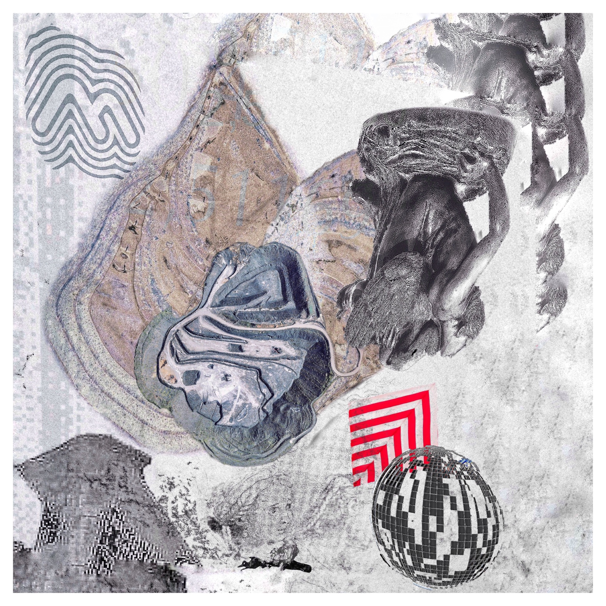
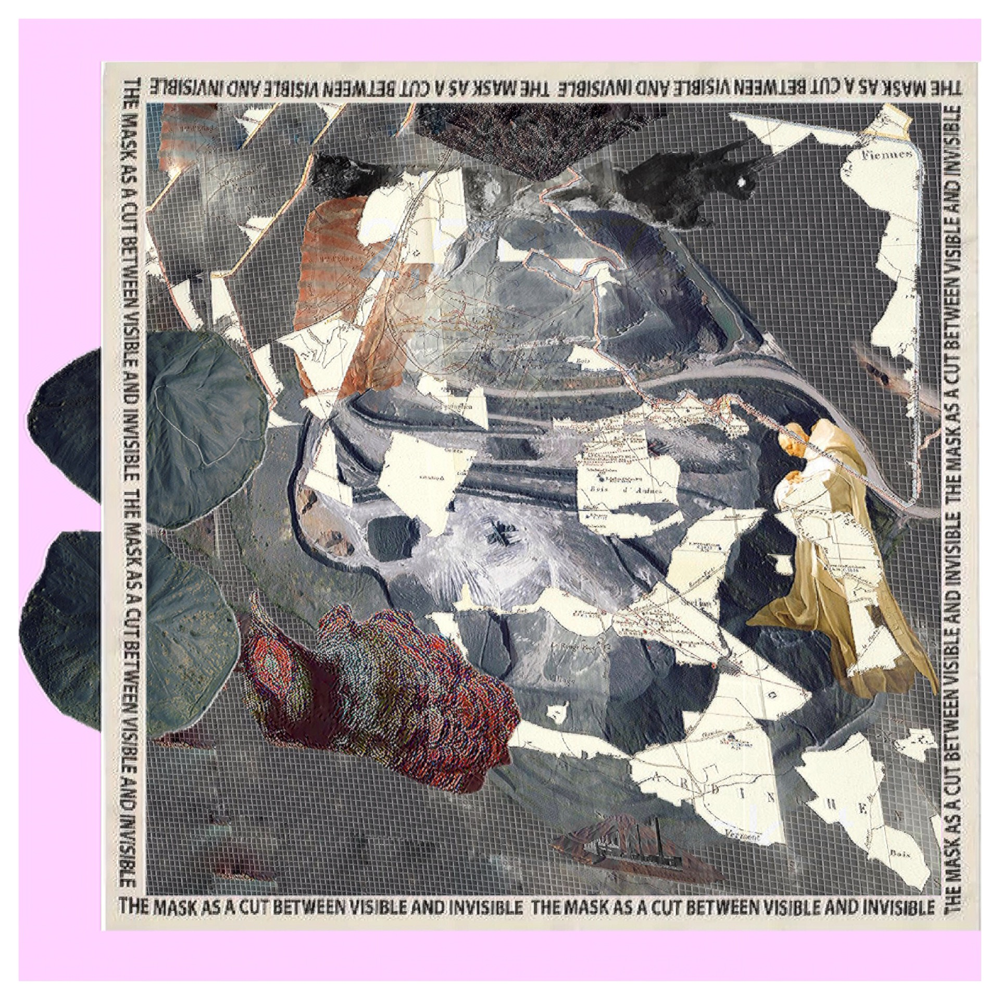
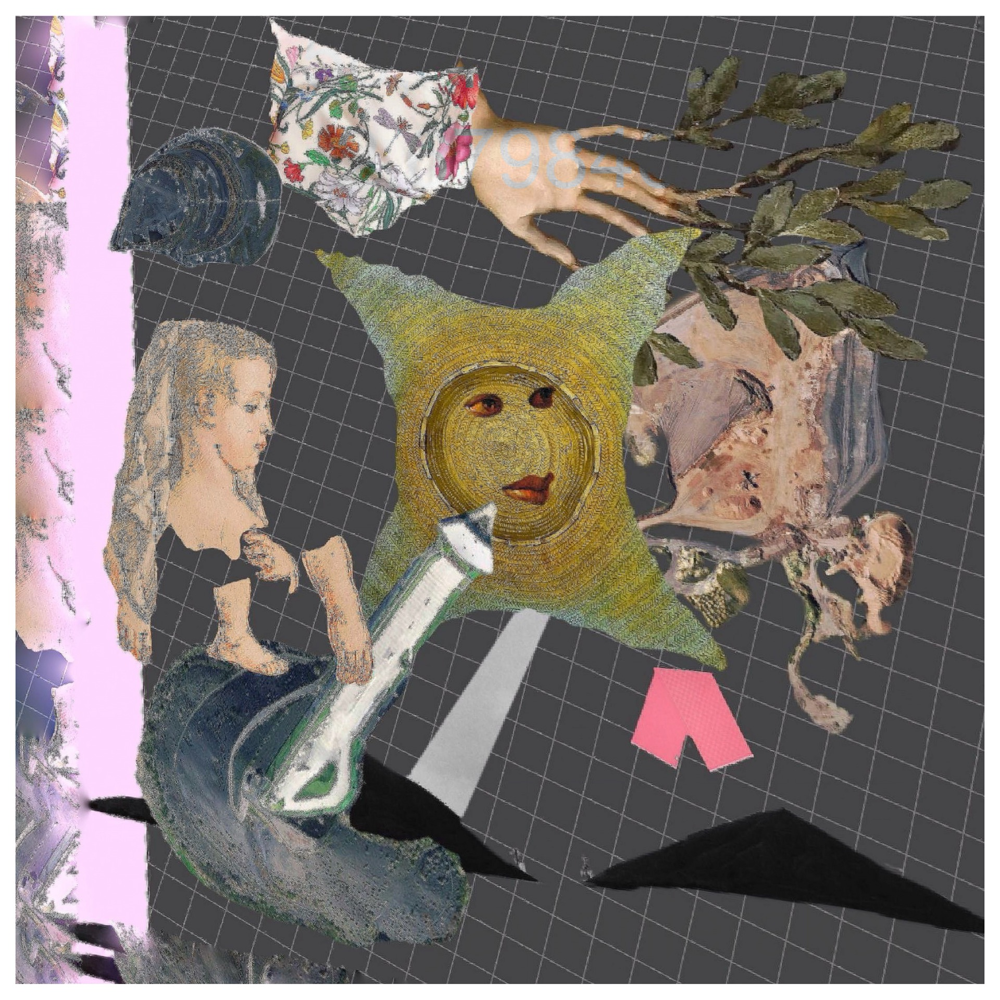

installation / 2021
land of tenderness
Land of Tenderness 2021 Series of scarves, coal from the Pas-de-Calais department Installation 310×100×100 Exhibition at Peresvetov Lane Gallery, Moscow
In 1660, in Madeleine de Scudéry's novel, a map of the Land of Tenderness appears, according to which, by passing through towns, overcoming rivers and obstacles, and crossing the Sea of Danger, one can reach the Terra Incognita of pure affection and the ideal.
That same year, coal mining began in the Pas-de-Calais region in northern France. In 1906, the greatest mining disaster would occur in the mines near the town of Courrières; thousands of people would die, and the development of the mines continued.
The Land of Tenderness did not seem to exist, yet the map itself was remade in the mines. Rock and relief. The rock of the Land of Tenderness was dug to the surface from several hundred kilometres deep, along with coal worth millions, which now rises in the artificial mountains across the entire region. The whole territory of Pas-de-Calais is surrounded by pits and slag heaps formed during the process of coal extraction. On these mines, each shaft has now become a point that appeared as a new quasi-natural and artificial place in the Land of Tenderness. The Land of Tenderness excavated, embodied, and as if destroyed: the entire Pas-de-Calais is an embodied map of the Land of Tenderness, completed and abandoned.
Now each slag heap bears the name of a place from the Land of Tenderness, and the scarves are named by the coordinates of these slag heaps. The map of the Land of Tenderness itself now exists on a Gucci scarf, produced several years ago for one of their collections.
The modern land of tenderness, of inhuman care, is tightly bound to industrialisation, to the mining industry and its distribution. Human tenderness surrounds the quasi-natural: mines, factories, nuclear power plants. The tenderness for each piece of extracted coal exceeds the tenderness for people. It is unknown where this map of tenderness leads. The surface fills with these points of a terrible tenderness, delivered by transport systems, by wires spanning the entire world.
gallery
project image sources


